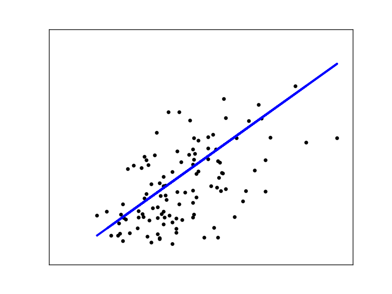

Linear Regression is the most basic regression algorithm, but the math behind it is not so simple. The concepts you learn in linear regression is the foundation of other algorithms such as logistic regression and neural network.
If you are studying machine learning on Andrew Ng's coursera course but don't like Matlab/Octave, this post is for you. We are going to write 3 flavors of linear regression introduced in his course. The lecture notes 1 on Stanford website is also helpful.
Before We Get Started
For this tutorial, I assume you know the followings:
- Python(list comprehension, basic OOP)
- Numpy
- Basic Linear Algebra
- Multivariate Calculus(partial derivative)
- Basic machine learning concepts
My code follows the scikit-learn style. If you are unfamiliar with scikit-learn, I recommend you check out at the website. I also briefly mention it in my post, K-Nearest Neighbor from Scratch in Python.
I'm using python3. If you want to use python2, add this line at the beginning of your file and everything should work fine.
from __future__ import division
Linear Regression with Gradient Descent
The first one is linear regression with gradient descent. Gradient descent needs two parameters, learning rate(eta) and number of iteration(n_iter):
import numpy as np
class LinearRegression(object):
def __init__(self, eta=0.1, n_iter=50):
self.eta = eta
self.n_iter = n_iter
We approximate a target value as a linear function of x:
where \(n\) is the number of features. \(\theta\) is a weight for each \(x\). The equation can be expressed as a the dot product. But we need \(x_0\), otherwise the length of \(x\) and \(\theta\) won't match. So we let \(x_0 = 1\)(intercept term). Now we can use the dot product:
But \(x\) is just one sample. We want to calculate all the samples(\(X\)) simultaneously. \(X\) is \(m \times n\) where m is the number of samples, and \(\theta\) is \(n \times 1\), so the formula becomes
The first step in fit is to insert the intercept term into every training sample:
def fit(self, X, y):
X = np.insert(X, 0, 1, axis=1)
return X
X = np.array([[0, 0], [1, 1], [2, 2], [3, 3]])
y = np.array([0, 1, 2, 3])
print(LinearRegression().fit(X, y))
In this case, X has 4 samples. For now, y doesn't matter. The output looks like this.
[[1 0 0]
[1 1 1]
[1 2 2]
[1 3 3]]
Exercise 1
I initialized self.w, which is \(\theta\), to 1. It could be anything. Now you can calculate \(X\theta\):
def fit(self, X, y):
X = np.insert(X, 0, 1, axis=1)
self.w = np.ones(X.shape[1])
# Your code here
X = np.array([[0, 0], [1, 1], [2, 2], [3, 3]])
y = np.array([0, 1, 2, 3])
print(LinearRegression().fit(X, y))
Output:
[ 1. 3. 5. 7.]
Solution
Numpy offers two ways to do the dot product: a.dot(b) or numpy.dot(a, b). I like the former because it's cleaner:
return X.dot(self.w)
Update Rule
Here is the update rule. Andrew Ng's notes and slides use summation, but you want to use the dot product instead of for loop. So I converted it to the vectorized form for you:
\(\alpha\) is the learning rate and \(m\) is the number of samples. \(\alpha\) should be big enough to be able to converge in a reasonable amount of time, but small enough to actually converge. The reason there is the constant \(m\) is to make the error in the same range regardless of the training size. Without \(m\), you have to change \(\alpha\) based on the training size, which is tedious.
Exercise 2
Let's complete fit method. I made a lot of changes to it. First I added m. Inside the for loop is gradient descent. I added code to calculate the sum of squares error and print it. It's not necessary for gradient descent because it only needs to compute the partial derivative of the error. Nevertheless, it is helpful to make sure the error is decreasing in every epoch. I only left the main part for the exercise. If you follow the above formula, you will be fine:
def fit(self, X, y):
X = np.insert(X, 0, 1, axis=1)
self.w = np.ones(X.shape[1])
m = X.shape[0]
for i in range(self.n_iter):
output = X.dot(self.w)
errors = y - output
# logging
if i % 10 == 0:
print(sum(errors ** 2))
print(self.w)
# Your code here
return self
X = np.array([[0], [1], [2], [3]])
y = np.array([0, 1, 2, 3])
regr = LinearRegression().fit(X, y)
I changed X to have only 1 feature. As you can see, the input and output is exactly the same. So the perfect weights would be \(\theta_0 = 0, \theta_1 = 1\). But since we initialize all the weights to 1, there is error at the beginning of the iteration:
4.0
[ 1. 1.]
0.533448767286
[ 0.60712687 0.71764587]
0.291592485834
[ 0.4483269 0.79002353]
0.15940620905
[ 0.33147903 0.84474356]
0.0871433277855
[ 0.24508712 0.88520733]
The initial error is 4, which makes sense. Then it decreases over time and weights shift toward [0, 1].
Solution
All you need to do is to translate the formula. Since we already have errors, we can use it:
self.w += self.eta / m * errors.dot(X)
predict
Exercise 3
You've already done the bulk of work. predict is pretty much the same as exercise 1. You compute \(X\theta\) on the test set:
def predict(self, X):
# Your code here
X = np.array([[0], [1], [2], [3]])
y = np.array([0, 1, 2, 3])
regr = LinearRegression().fit(X, y)
print(regr.predict([[4],[5]]))
Output:
[ 3.96502401 4.94626971]]
Solution
Don't forget to insert the intercept term:
return np.insert(X, 0, 1, axis=1).dot(self.w)
score
Exercise 4
LinearRegression class in scikit-learn has score method. The score of classification is just the mean accuracy. But in regression, it's slightly more complicated than that. I will omit the explanation and just quote the formula from the documentation.
The coefficient R^2 is defined as
(1 - u/v), whereuis the regression sum of squares((y_true - y_pred) ** 2).sum()andvis the residual sum of squares((y_true - y_true.mean()) ** 2).sum().
def score(self, X, y):
# Your code here
X = np.array([[0], [1], [2], [3]])
y = np.array([0, 1, 2, 3])
regr = LinearRegression().fit(X, y)
print(regr.score(X, y))
Output:
0.990472190986
Solution
Here is my solution:
return 1 - sum((self.predict(X) - y)**2) / sum((y - np.mean(y))**2)
Here is the complete code:
import numpy as np
class LinearRegression(object):
def __init__(self, eta=0.1, n_iter=50):
self.eta = eta
self.n_iter = n_iter
def fit(self, X, y):
X = np.insert(X, 0, 1, axis=1)
self.w = np.ones(X.shape[1])
m = X.shape[0]
for _ in range(self.n_iter):
output = X.dot(self.w)
errors = y - output
self.w += self.eta / m * errors.dot(X)
return self
def predict(self, X):
return np.insert(X, 0, 1, axis=1).dot(self.w)
def score(self, X, y):
return 1 - sum((self.predict(X) - y)**2) / sum((y - np.mean(y))**2)
Stochastic Gradient Descent
The above code updates the weights after looking at all the samples. It's called Batch Gradient Descent. If the sample size is huge, it will be slow. Stochastic Gradient Descent(or SGD for short) solves this problem by updating the weights after each sample, which is much faster. The downside is that it no longer converges to the minimum, but in practice it makes very little difference.
Exercise 5
Let's write SGD. We might want to shuffle the samples after each epoch, so we are going to add shuffle parameter. We also have _shuffle method. Numpy's random.permutation makes it easy. Notice that we no longer have m. Your code should update the weights after each sample.
class LinearRegressionSGD(object):
def __init__(self, eta=0.1, n_iter=50, shuffle=True):
self.eta = eta
self.n_iter = n_iter
self.shuffle = shuffle
def fit(self, X, y):
X = np.insert(X, 0, 1, axis=1)
self.w = np.ones(X.shape[1])
for _ in range(self.n_iter):
if self.shuffle:
X, y = self._shuffle(X, y)
# Your code here
return self
def _shuffle(self, X, y):
r = np.random.permutation(len(y))
return X[r], y[r]
Solution
We loop through the samples using zip and the rest is similar to batch gradient descent:
def fit(self, X, y):
X = np.insert(X, 0, 1, axis=1)
self.w = np.ones(X.shape[1])
for _ in range(self.n_iter):
if self.shuffle:
X, y = self._shuffle(X, y)
for x, target in zip(X, y):
output = x.dot(self.w)
error = target - output
self.w += self.eta * error * x
return self
predict and score are the same as before so I will omit them.
The Normal Equations
Actually there is a way to directly find a optimal weights using the following formula:
I'm not going to explain why this works. The detailed explanation can be found at the lecture notes.
Exercise 6
Now the code becomes surprisingly simpler. You can use numpy's linalg.inv for inverse.
class LinearRegressionNormal(object):
def __init__(self):
pass
def fit(self, X, y):
X = np.insert(X, 0, 1, axis=1)
# Your code here
return self
Solution
Here is mine:
self.w = np.linalg.inv(X.T.dot(X)).dot(X.T).dot(y)
It finds the optimal solution for the toy example we've been using:
X = np.array([[0], [1], [2], [3]])
y = np.array([0, 1, 2, 3])
regr = LinearRegressionNormal().fit(X, y)
print(regr.w)
print(regr.score(X, y))
Output:
[ -4.99600361e-16 1.00000000e+00]
1.0
Diabetes Data Set
Let's try our linear regression on the diabetes data set. The following code is inspired by this example from scikit-learn.
from sklearn import datasets
from sklearn.cross_validation import train_test_split
from sklearn.preprocessing import StandardScaler
import matplotlib.pyplot as plt
diabetes = datasets.load_diabetes()
# Use only one feature
X = diabetes.data[:, np.newaxis, 2]
y = diabetes.target
X_train, X_test, y_train, y_test = train_test_split(X, y, test_size=.25)
scaler_x = StandardScaler()
X_train = scaler_x.fit_transform(X_train)
X_test = scaler_x.transform(X_test)
regr = LinearRegressionSGD(eta=.1, n_iter=1500)
regr.fit(X_train, y_train)
plt.scatter(X_test, y_test, color='black')
plt.plot(X_test, regr.predict(X_test), color='blue', linewidth=3)
plt.xticks(())
plt.yticks(())
plt.show()
If you want to learn more about train_test_split and StandardScaler, read my last post, Scikit-learn's useful tools from scratch. When using gradient descent, standardization is important. We are only using one feature so that we can visualize it:

I encourage you to play with the code and see how changing each parameter affects the result.
Conclusion
If you have questions or comments, tweet @kenzotakahashi and I'll be happy to help.